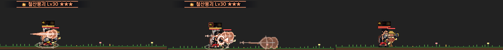
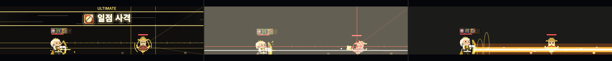
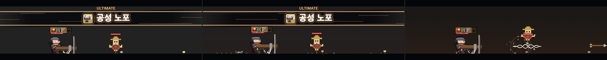
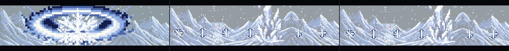
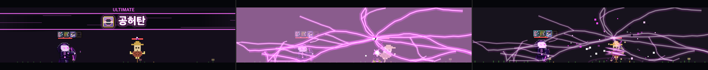
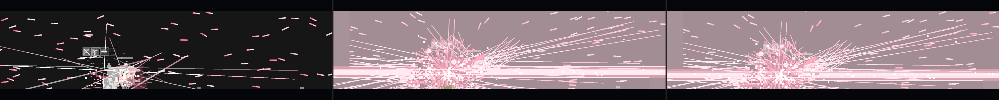
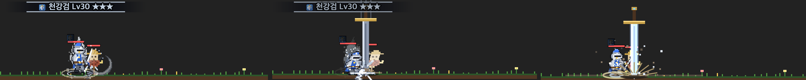
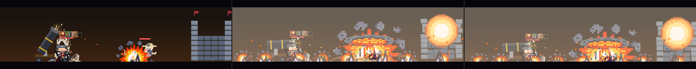

2026-10-16 · 시뮬레이터에서 스킬 50종 × 숙련 4단계를 실제로 쳐서, 프레임마다 텍스처(vfxDraw) 호출과 canvas 벡터 그리기(arc·stroke·gradient)를 셌다. 평소 화면(시전 안 함)을 빼고 남은 만큼이 그 스킬 몫이다. ▶ 는 그 스킬만 반복 재생하는 시뮬레이터 링크다.
A 아예 빠졌거나 다른 그림으로 대신함 · B 주된 그림이 아직 벡터·코드 · C 약함 (정하기 나름)
| 스킬 (단계) | 지금 상태 | 근거 | |
|---|---|---|---|
| A | 절대영도 ★·★★★ ▶ | 버그: f19b 시트가 파일은 있는데 등록이 안 돼서 그 부품이 안 그려진다 | src/vfx/f19b.png 있음, vfx-mage.js 목록에 없음 → vfxDraw 가 false (absoluteZero.js:61). 등록 한 줄로 고칠 수 있다 |
| A | 붕권 ★★★ 철산붕괴 ▶ | 거대 강철 주먹(XE06)이 없어 2차 충격 원뿔(XE05)을 그대로 씀 | QI_TEX_FALLBACK xe06→xe05 |
| A | 회전 발차기 ★★★ 폭풍선풍각 ▶ | 남는 회오리 기둥(XE09) 없음 → 수평 회오리 띠(XE08) 대체 | xe09→xe08 |
| A | 장풍 ★★★ 기공탄 ▶ | 흩어지는 기 파편(XE11) 없음 → 기공사 평타 명중(XH6) 대체 | xe11→xh6 |
| A | 기막 ★★·★★★ 금강기막 ▶ | 막 둘레를 도는 고리(XE13) 없음 → 기 오라(XE16) 대체 | xe13→xe16 |
| A | 챔피언·템페스트·그랜드마스터 평타 ▶ | 3차 평타 궤적(XW2a·3a·4a) 없음 → 2차 궤적을 그대로 (색깔놀이 금지 위반 상태) | xw2a→xw2, xw3a→xw3, xw4a→xw4 |
| A | 대공성포 Lv1 ▶ | 궁극기인데 Lv1 에 쓰는 텍스처가 석궁사수 2차 명중(K21) 하나뿐. 나머지는 벡터 연기·드릴 자국 | Lv1 텍스처 [k21] |
| A | 태양 관통 Lv1 ▶ | 텍스처 0장. 조준선·광선·불꽃이 전부 코드 그림 | Lv1 텍스처 [] |




| 스킬 (단계) | 벡터로 남은 부분 | 프레임당 (함수) | |
|---|---|---|---|
| B | 차원 붕괴 Lv1~★★ ▶ | 화면을 덮는 자홍 균열이 AA 선. K36 은 ★★★ 에만 | stroke 69 (dcDrawCracks) + 스파크 hitFx |
| B | 천검 ★★★ ▶ | 꽃잎 폭풍 검선이 1px 선 수백 개 | stroke 112 (tcPetalStormFx) |
| B | 대공성포 ★~★★★ · 폭열탄 ★★ ▶ | 포탄 연기가 용의 숨결용 벡터 불꽃 혀를 재사용 | 곡선 126·21 (scorchFx) |
| B | 강철 베기 ★★★ ▶ | 하늘 검(E01)·분화구(C7) 미생성 — fillRect 검 + 선 방사 | skySwordFx·craterFx (⑤-4 에서 넘긴 것) |
| B | 태양 관통 ★~★★★ | 홍염 곡선·스파크 선, 태양 그라데이션 | saFlareFx·hitFx stroke 13 |
| B | 천붕 Lv1·전 단계 | 균열 선·떨어지는 하늘 조각 다각형 (땅판 도트는 유지 결정) | wbFissure·wbSlab |
| B | 용황 강림 ★★★ | 용암 땅이 원 그리기 | arc 7 (deMolten) |
| B | 대지 가르기 ★★★ | 용암 균열 줄 | lavaFissureFx |




| C | Lv1 이 명중 그림 하나뿐: 질풍난무·일섬·용추락·대검 횡참·돌진 격돌·기병 돌격·폭열탄·다연장 사격·천붕 (Lv1 텍스처 = K 명중 1장 + 잔상). 숙련 단계 설계상 의도일 수 있지만 조사 때 "Lv1~9 가 너무 약하다"가 지적됐던 자리 |
| C | 궁극기 공용 스파크 hitFx(벡터 선 + 원)가 성좌 강림·천검·태양 관통·차원 붕괴·대공성포에 남아 있다 |
| C | 작은 코드 부품: 마력 폭발 ★★★ 파편 다각형(mbShards), 방패 벽 ★★ 미니 방패(cvMiniShield), 헤드샷 ★★★ 느린 탄 고리, 연사 정령 매 빛무리 |
| C | 스펙 목록에 있지만 안 뽑은 공용 부품: C6·C7·C8·C16, E01 |
자세한 표: docs/specs/skill-vfx.md "빈 곳 채우기 계획". 무료 vfx_workbench 먼저, 못 넘은 것만 유료.
| 새 시트 12장 | E01 하늘 강철검 · C6 연기 · C7 파편 · C8 지면 균열 · C16 별 반짝임 · E45(새) 공허 균열 타일 · XE06 강철 주먹 · XE09 회오리 기둥 · XE11 기 파편 · XE13 기 고리 · XW2a·3a·4a 3차 평타 궤적 |
|---|---|
| 코드만 (유료 0) | 태양 관통 전 단계(P3·F12·H24·K35) · 대공성포 Lv1(F15·E31·K37) · 천검 꽃잎 폭풍(F04) · 궁극기 공용 스파크 → 각자 K · 방패 벽 미니 방패(E24) · 헤드샷 느린 탄(P2·C3) |
| 유료 상한 | 49회 (예상 0~15) · 잔량 1,129 · 바닥 300 |
| 안 함 | Lv1 이 명중 하나뿐인 9종 (숙련 설계, 결정 필요) · 화면 덮개 |
문제 없음: 마법사 계열 10종, 창기사·레인저 대부분, 파이터 1·2차 스킬과 3차 궁극기 — 전 단계에서 벡터 그리기가 거의 없다.